Sunnah Sunnah Nabi SAW

Sunnah di Waktu Shubuh dan setelahnya
-
Daftar list
-
Bagian Pertama
-
Sunnah Sunnah Ketika Melangkah Menuju Masjid
-
Sunnah Sunnah di Dalam Shalat
-
Meletakan Sutrah
-
Sunnah Sunnah Saat Berdiri
-
Sunnah Sunnah Saat Ruku’
-
Sunnah Sunnah Setelah Bangkit dari Ruku’
-
Sunnah Sunnah Ketika Sujud
-
Sunnah-sunnah yang terkait pada saat duduk di antara dua sujud
-
Sunnah-sunnah yang terkait dengan tasyahud
-
Berdzikir Setelah Selesai Melaksanakan Shalat Fardhu
-
Duduk di Tempat Shalat Hingga Matahari Terbit
-
Zikir pagi
- Sunnah menggunakan sutrah
- Disunnahkan agar jarak sutrah dekat dengan tempat shalat
- Menghentikan orang yang lewat di hadapan orang yang sedang shalat
- Bersiwak setiap kali hendak melakukan shalat
Penggunaan sutrah ini disunnahkan hanya bagi imam atau munfarid (orang yang shalat sendirian) saja, sedangkan makmum sudah terwakilkan dengan sutrahnya imam.
Jarak yang dekat antara tempat shalat dan sutrah menurut sunnah adalah selebar tempat jalan untuk kambing.
Dalilnya adalah hadits yang diriwayatkan dari Abu Sa’id RA ia berkata, Rasulullah SAW pernah bersabda, “Apabila seorang di antara kalian sedang shalat dengan menggunakan sutrah sebagai pembatas, tetapi masih saja ada orang yang lewat di hadapannya, maka halangilah jalannya (dengan tangan). Jika orang itu masih melakukannya, maka lawanlah ia, karena itu adalah syaitan.” (HR. Muslim no.505)
- Mengangkat tangan ketika mengucapkan takbiratul ihram, hendak ruku, hendak bangun dari ruku, dan ketika bangun dari tasyashud awal
- Ketika mengangkat tangan disunnahkan agar seluruh jari jemari dalam keadaan tegak dan memberi jarak antara satu jari dengan jari yang lain
- Menempatkan kedua tangan yang diangkat di tempat yang dianjurkan 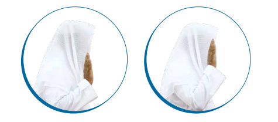
- Disunnahkan agar tangan yang kanan diletakkan di atas tangan yang kiri setelah bertakbiratul ihram
- Disunnahkan pula agar tangan yang kanan menggenggam tangan kiri
- Disunnahkan untuk membaca doa iftitah
- Alhamdulillahi hamdan katsiran thayyiban mubarakan fih
- Allahumma ba’id bayni wa bayna khathayaya kama ba’atta baynalmasyriqi wal-magrib, Allahumma naqqini min khathayaya kama yunaqqats-tsaubul-abyadhu minad-danas, Allahummagsilni min khathayaya bits-tsalji wal-ma`I wal-barad
- Allahu akbar kabira, wal-hamdulillahi katsira, wa subhanallahi bukratan wa ashila
- Berta’awudz (mengucapkan a’udzubillahi minasy-syaithanir-rajim)
- Membaca basmalah (yakni bismillahirrahmanirrahim)
- Mengucapkan amin bersama imam
- Membaca surah lain setelah surah Al-Fatihah
Doa iftitah ini ada beberapa opsi, maka dianjurkan agar pembacaannya divariasikan antara doa yang satu dengan doa yang lainnya. Berikut ini adalah doa-doa tersebut:
Sunnah ini dilakukan pada rakaat yang pertama dan kedua bagi imam, orang yang shalat sendirian, dan makmum pada shalat sirr (tidak bersuara, seperti shalat zhuhur dan ashar). Inilah pendapat mayoritas ulama –Rahimahumullah
- Disunnahkan agar kedua tangan diletakkan pada lutut, hampir seperti menggenggamnya, lalu merenggangkan jemarinya 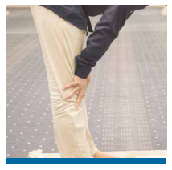
- Disunnahkan agar punggung dalam keadaan lurus saat ruku’ 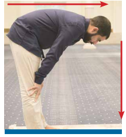
- Disunnahkan agar menjauhkan siku dari sisi tubuh saat ruku’ 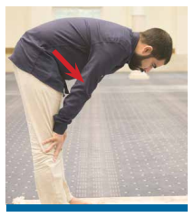
- Disunnahkan mengucapkan bacaan-bacaan yang diajarkan oleh Nabi saat ruku’
- Subhanakallahumma rabbana wa bihamdika, allahummaghfir li
- Subbuhun quddusun rabbul-malaikati war-ruh
- Allahumma laka raka’tu wa bika amantu wa laka aslamtu, khasya’a laka sam’i wa bashari wa mukhkhi wa azhmi wa ashabi
- Subhana dzil-jabaruti wal-malakuti wal-kibriyai wal-azhamati
Hendaknya orang yang shalat menambahkan bacaan lain yang diajarkan Nabi selain bacaan subhana rabbiyal-azhim (Mahasuci Allah, Tuhanku Yang Mahaagung). Di antaranya:
- Memperpanjang pelaksanaan rukun ini 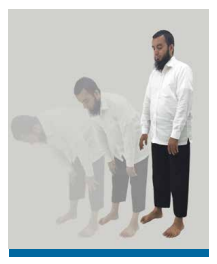
- Memvariasikan ucapan rabbana wa lakal-hamd saat i’tidal (saat bangkit dari ruku’):
- Allahumma rabbana wa lakal-hamd
- Allahumma rabbana lakal-hamd
- Rabbana wa lakal-hamd
- Rabbana lakal-hamd
- Membaca doa yang diajarkan oleh Nabi saat i’tidal
- Rabbana lakal hamdu mil`us-samawati wal-ardhi wa mil`u ma syi`ta min syai`in ba’du, ahluts-tsana wal-majdi, ahaqqu ma qalalabdu, wa kulluna laka abdun, allahumma la mani’a lima a’thayta wala mu’thiya lima mana’ta, wala yanfa’u dzal-jaddi minkal-jad
- Al-hamdulillahi hamdan katsiran thayyiban mubarakan fih
- Allahumma thahhirni bits-tsalji wal-baradi wal-ma`il-barid, allahumma thahhirni minadz-dzunubi wal-khathaya kama yunaqqats-tsaubul-abyadhu minal-wasakh
Semua bacaan ini boleh diselang-seling pengucapan, sesekali mengucapkan satu bacaan dan di waktu lain mengucapkan bacaan yang lainnya.
Zikir yang diajarkan dalam syariat saat i’tidal antara lain adalah:
Doa-doa ini memang bisa dijadikan opsi untuk dibaca, namun akan lebih baik jika doa-doa ini dibaca semua agar dapat memperpanjang waktu pelaksanaan rukun beri’tidal.
- Disunnahkan agar lengan dijauhkan dari sisi tubuh dan perut dari paha 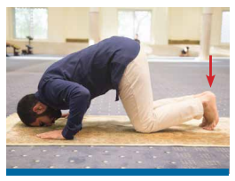
- Disunnahkan agar jari jemari kaki dihadapkan ke arah kiblat saat bersujud 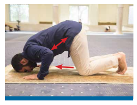
- Disunnahkan agar membaca bacaan yang diajarkan oleh Nabi ketika bersujud
- Subhanakallahumma rabbana wa bihamdika, allahummagfir li
- Subbuhun quddusun rabbul malaikati war-ruh
- Allahumma laka sajadtu wa bika amantu wa laka aslamtu, sajada wajhiya lil-ladzi khalaqahu wa shawwarahu wa syaqqa sam’ahu wa basharahu, tabarakallahu ahsanul-khaliqin
- Allahummagfir li dzanbi kullahu diqqahu wa jillahu wa awwalalhu wa akhirahu wa alaniyatahu wa sirrahu
- Allahumma a’udzu bi ridhaka min sakhatika wa bimu’afatika min uqubatika wa a’udzu bika minka, la uhshi tsana`an alaika anta kama atsnaita ala nafsik/li>
- Disunnahkan agar memperbanyak doa saat bersujud
Hendaknya orang yang shalat membaca bacaan-bacaan tersebut saat bersujud sekaligus atau satu persatu secara bervariasi.
Sebagaimana diketahui, bahwa bacaan yang wajib diucapkan saat ruku’ hanyalah subhana rabbiyal-azhim sebanyak satu kali, namun disunnahkan untuk membacanya lebih dari itu. Begitu pun saat bersujud, bacaan subhana rabbiyal-a’la hanya wajib dibaca sekali, sedangkan yang kedua dan ketiga hukumnya sunnah
- Disunnahkan agar orang yang shalat merebahkan kaki kirinya dan mendudukinya, sedangkan kaki kanan ditegakkan
- Memperpanjang waktu pelaksanaan rukun ini
- Disunnahkan duduk sejenak setelah sujud kedua sebelum bangkit ke rakaat kedua atau keempat.
Duduk ini dinamai dengan duduk istirahat. Tidak ada bacaan apapun yang dibaca pada saat itu.
- Disunnahkan merebahkan kaki kiri ketika tasyahud, sedangkan kaki kanan ditegakkan 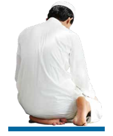
- Memvariasikan cara-cara yang disunnahkan saat meletakkan kedua tangan ketika bertasyahud. 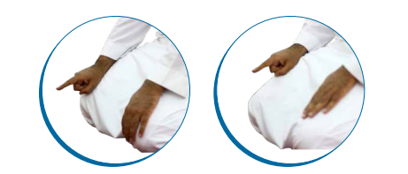
- Memvariasikan cara-cara yang disunnahkan saat meletakkan jari jemari ketika bertasyahud. 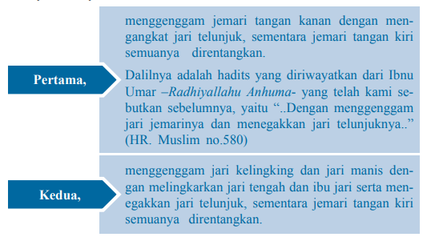 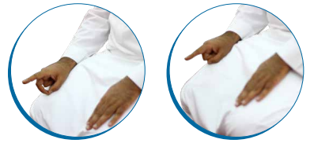
- Memvariasikan bacaan-bacaan yang diajarkan oleh Nabi – Shallallahu Alaihi wa Sallam- ketika bertasyahud.
- At-tahiyyatu lillah wash-shalawatu wath-thayyibat, as-salamu alaika ayyuhan-nabiyyu warahmatullahi wa barakatuh, as-salamu alaina wa ala ibadillahish-shalihin, asyhadu anla ilaha illallah, wa asyhadu anna muhammadan abduhu wa rasuluh
- At-tahiyyatul-mubarakatush-shalawatuth-thayyibatu lillah, assalamu alaika ayyuhan-nabiyyu warahmatullahi wa barakatuh, as-salamu alaina wa ala ibadillahish-shalihin, asyhadu anla ilaha illallah, wa asyhadu anna muhammadan abduhu wa rasuluh
- At-tahiyyatuth-thayyibatush-shalawatu lillah, as-salamu alaika ayyuhan-nabiyyu warahmatullahi wa barakatuh, as-salamu alaina wa ala ibadillahish-shalihin, asyhadu anla ilaha illallah, wa asyhadu anna muhammadan abduhu wa rasuluh
- Duduk dengan cara tawarruk pada saat tasyahud akhir untuk shalat-shalat yang rakaatnya tiga dan empat
- Merebahkan kaki kiri dan menyilangkannya hingga keluar di sisi kanan, sedangkan kaki kanan ditegakkan, dengan pantat yang menempel dengan lantai.
- Merebahkan kedua kakinya dan meletakkan kedua tumitnya di sisi kanan, dengan pantat yang menempel dengan lantai.
- Memvariasikan bacaan-bacaan shalawat yang diajarkan oleh Nabi SAW
- Allahumma shalli ala sayyidina muhammadin wa ala ali sayyidina muhammad, kama shallayta ala sayyidina ibrahima wa ala ali sayyidina ibrahim, innaka hamidum-majid, allahumma barik ala sayyidina muhammadin wa ala ali sayyidina muhammad, kama barakta ala ibrahima wa ala ali ibrahim, innaka hamidum-majid
- Allahumma shalli ala sayyidina muhammadin wa ala ali sayyidina muhammad, kama shallayta ala sayyidina ibrahima wa ala ali sayyidina ibrahim, allahumma barik ala sayyidina muhammadin wa ala ali sayyidina muhammad, kama barakta ala sayyidina ibrahima wa ala ali ibrahim, fil alamina, innaka hamidum-majid
- Allahumma shalli ala muhammadin wa ala azwajihi wa sayyidina muhammadin wa ala azwajihi wa dzurriyyatih, kama barakta ala ali sayyidina ibrahim, innaka hamidum-majid
- Disunnahkan berta’awudz (mohon dihindarkan) dari empat hal berta’awudz mengucapkan salam
- Allahumma inni a’udzu bika minal-ma`tsami wal-maghram
- Allahumma inni as`alukal-jannata wa a’udzu bika minan-nar
- Allahumma inni zhalamtu nafsi zhulman katsiran wala yaghfirudzdzunuba illa anta, faghfir li maghfiratan min indika warhamni, innaka antal-ghafurur-rahim
- Allahumma a’inni ala dzikrika wa syukrika wa husni ibadatik
- Allahumma inni a’udzu bika minal-bukhli, wa a’udzu bika minaljubni, wa a’udzu bika an uradda ila ardzalil-umuri, wa a’udzu bika min fitnatid-dunya, wa a’udzu bika min adzabil-qabri
- Allahumma hasibni hisaban yasira
Tasyahud ini dilakukan setelah orang yang shalat menyelesaikan ruku’, sujud, berdiri, dan duduk di antara dua sujudnya di rakaat yang kedua, baik itu pada shalat yang berjumlah empat rakaat, tiga, ataupun dua. Intinya, pada setiap selesai dua rakaat, disunnahkan untuk melakukan duduk tasyahud yang seperti itu
Ada dua cara yang disunnahkan saat meletakkan kedua tangan ketika bertasyahud, yaitu:
Maksudnya adalah, ketika seseorang melakukan tasyahud akhir pada shalat empat rakaat atau tiga (misalnya maghrib dan isya), hendaknya ia dudukkan pantat di atas lantai.
Tawarruk sendiri sebenarnya memiliki dua opsi, oleh karena itu sebaiknya sesekali melakukan salah satu tawarruk yang disunnahkan itu dan kali yang lain melakukan opsi tawarruk yang disunnahkan lainnya secara berkala.
Ada beberapa bacaan shalawat yang diajarkan oleh Nabi SAW, yaitu:
Imam An-Nawawi –Rahimahullah– mengatakan, “Para ulama bersepakat bahwa berzikir setelah shalat fardhu dianjurkan.” (lihat. Al-Adzkar hal.66). Dianjurkan pula untuk mengangkat suara saat berzikir
Di antara zikir tersebut adalah:
- Beristighfar sebanyak tiga kali (yakni mengucapkan astaghfirullahalazhim). Kemudian mengucapkan allahumma antas-salam wa minkas-salam tabarakta dzal-jalali wal-ikram
- La ilaha illallah wahdahu la syarika lah, lahul-mulku wa lahulhamdu wa huwa ala kulli syai`in qadir, la hawla wala quwwata illa billah, la ilaha illallah, wala na’budu illa iyyah, lahunni’matu wa lahul-fadhl, wa lahuts-tsana`ul-hasan, la ilaha illallahu mukhlishina lahud-din, walaw karihal-kafirun
- La ilaha illallah wahdahu la syarika lah, lahul-mulku wa lahulhamdu wa huwa ala kulli syai`in qadir, allahumma la mani’a lima a’thaita wa mu’thiya lima mana’ta wala yanfa’u dzal-jaddi minkaljad
-
Membaca tasbih tahmid dan takbir. Ada beberapa opsi yang
mungkin dibaca terkait dengan sunnah ini, yaitu:
- Pertama: Subhanallah 33 kali, alhamdulillah 33 kali, allahu akbar 33 kali, dan menyempurnakannya menjadi 100 dengan membaca la ilaha illallahu wahdahu la syarika lah, lahul-mulku wa lahul-hamdu wa huwa ala kulli syai`in qadir
- Kedua: Subhanallah 33 kali, alhamdulillah 33 kali, allahu akbar 34 kali.
- Ketiga: Subhanallah 25 kali, alhamdulillah 25 kali, allahu akbar 25 kali dan la ilaha illallah 25 kali.
- Keempat: Subhanallah 10 kali, alhamdulillah 10 kali, allahu akbar 10 kali.
Disunnahkan pula agar tasbih tahmid dan takbir ini dihitung dengan menggunakan jari jemari, sebagaimana diriwayatkan oleh Imam Ahmad dan Imam At-Tirmidzi, bahwasanya Nabi SAW pernah bersabda, “Bertasbihlah dan hitunglah dengan jemari kalian, karena jemari kalian itu yang akan ditanya dan menjawabnya.” (HR. Ahmad no.27089, At-Tirmidzi no.3486, dan dikategorikan sebagai hadits hasan oleh Al-Albani dalam Shahih Al-Jami 2/753)
- Membaca ayat kursi.
- Membaca mu’awwidzatain (surah Al-Falaq dan surah An-Nas).
Itulah sunnah-sunnah di dalam shalat untuk dilaksanakan oleh para pelaksana shalat. Meskipun saat ini masih dalam pembahasan waktu shalat shubuh, namun sunnah-sunnah tersebut berlaku untuk semua shalat fardhu –wallahu a’lam–